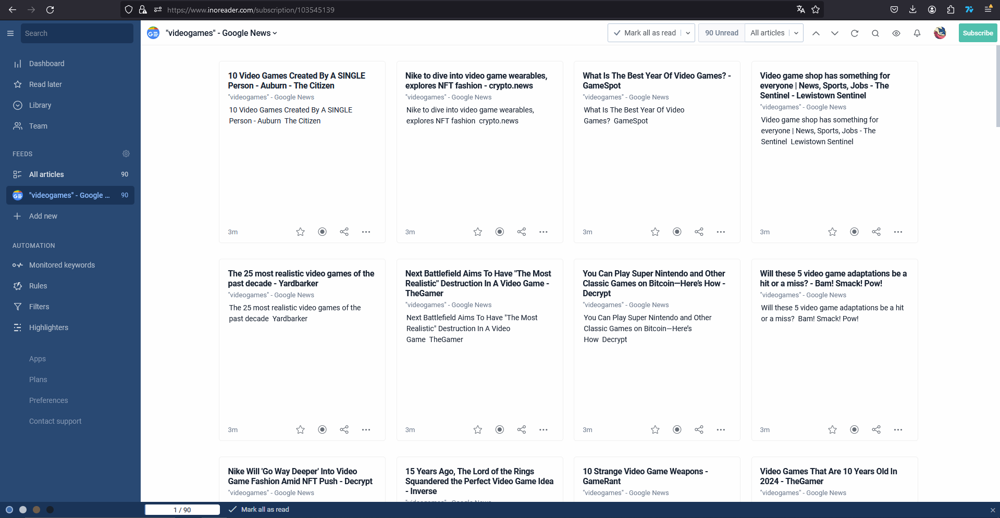

Mis Feeds
EurogamerEurogamer es una feed que trata todas las noticias e información relacionada con videojuegos. Elegí Eurogamer debido a que es una de de las revistas más populares en España en cuanto al medio de videojuegos se refiere.
MuyComputer es una feed que trata noticias relacionadas con la Informática. También suele tener guías explicando cómo hacer ciertas funciones del PC como cambiar el orden de arranque de las unidades conectadas a un sistema, entre otras. La elegí por haberla usado previamente en casos como los descritos anteriormente.
Sony es una empresa mundialmente conocida, y también tiene una feed. En este caso el feed que usaremos es el feed de noticias, pero tiene más feeds que los usuarios pueden ir leyendo. La elegí por curiosidad ya que no pensaba que Sony tuviera una feed.
Elegí Inoreader ya que es una de los mejores sitios para encontrar feeds que podamos leer a nuestro gusto. Funciona de forma que, al crerte una cuenta, ya puedes buscar en feeds de Google News, Reddit... Etc, noticias de cualquier término que tú pongas. En mi caso, elegí videojuegos. Lo malo de Inoreader es que en el caso de este sitio, no encontré resultados en español. Tuve que poner: "videogames" como término de búsqueda para poder encontrar resultados.
